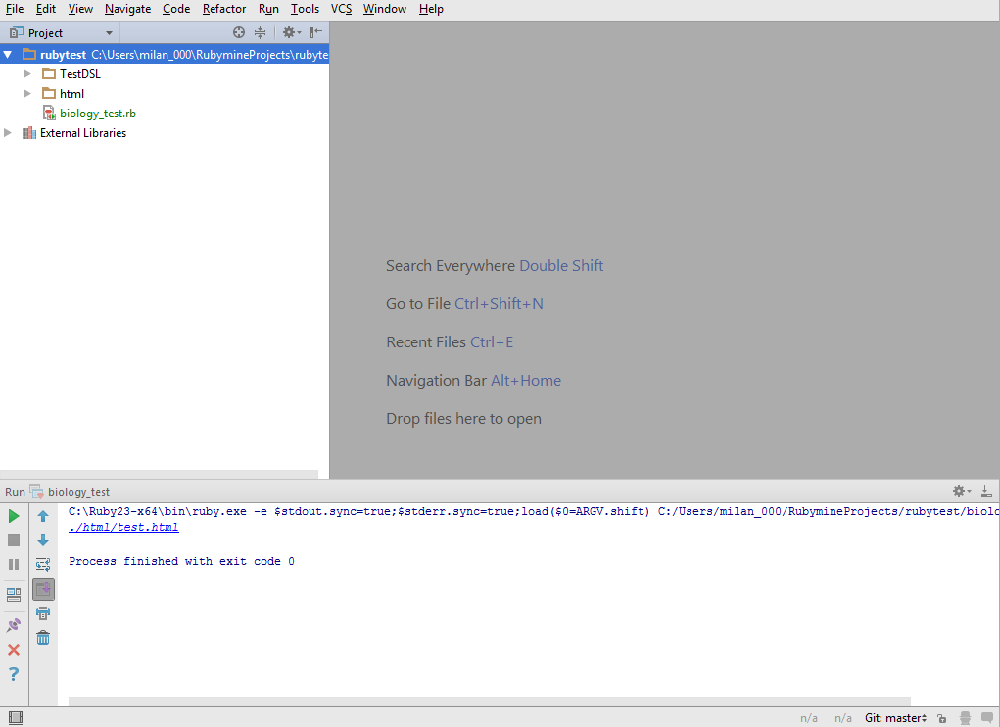
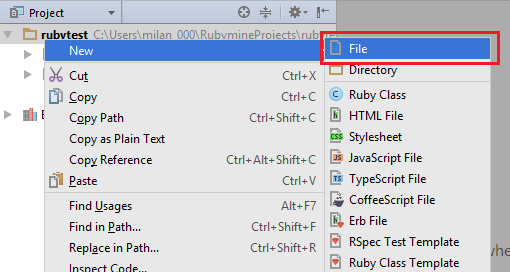
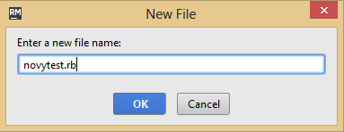
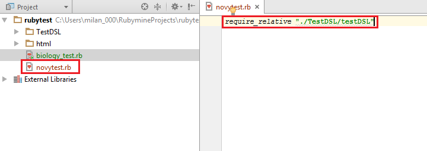

Creating your first test
Running the editor
You will be working with the RubyMine environment. If it is not already open, run it by doubleclick on its icon on the desktop. You should see the window that is shown on the following figure. Take note of the view on the top left with the "Project" title, then the "Output" view on the right bottom, and finally the largest view on the right top - the editor. In the "Project" view you can create new files with the tests, in the "Output" window you can see if there are any error messages (only if you do a mistake), and in the editor view you will see and edit the test.
{kind=link}
New test
You can create a new test in a following way:
- Right-click on the project rubytest in the Project view
- In the menu that pops out select New/Other 
- In the window type in the name of a new file (all lowercase without spaces, e.g. newtest), and add the name an ".rb" suffix (see the following figure), and confirm the creation either by pressing Enter button, or by clicking on the OK button. 
{kind=link}
{kind=link}
After taking these steps a new file will be created (notice a new file named newtest.rb in the Project view). On the first line of this file (it will be opened in the editor view) type in a command require_relative and after it add a following text in quotation marks (with quotation marks as well): "./TestDSL/testDSL". This line has to be present at the beginning of the file so you can define and run a test.
{kind=link}
In next section I will discuss more about what you can use to define the test.